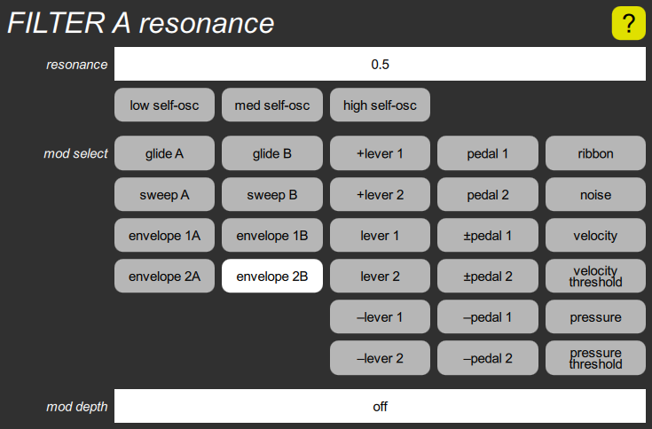

FILTER resonance cluster

This includes the resonance slider, which adjusts the amount of filter resonance, before modulation. Unlike the original Chroma, which only had eight fixed settings, this is continuously variable, and can be modulated. The highest three settings cause the filter to oscillate, with different degrees of overdrive, superimposing a sine wave on top of whatever signal is being filtered. The three buttons below the slider allow these choices to be made quickly.
The mod select buttons and mod depth allow the resonance to be modulated.
An oscillating filter can play a normal scale if its tuning is set to C5 (middle C) and one of the Filter mod cluster mod inputs uses glide A or B as the mod select, with a depth of 32 semitones per unit.